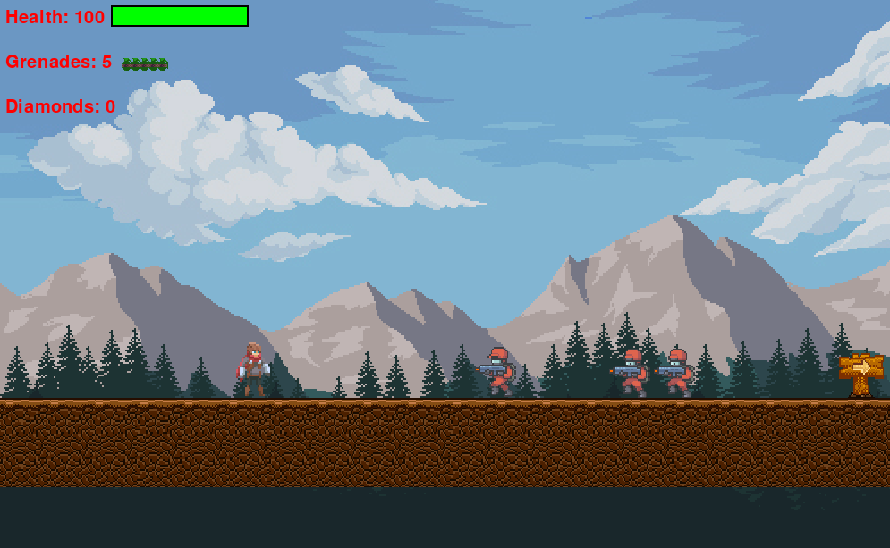
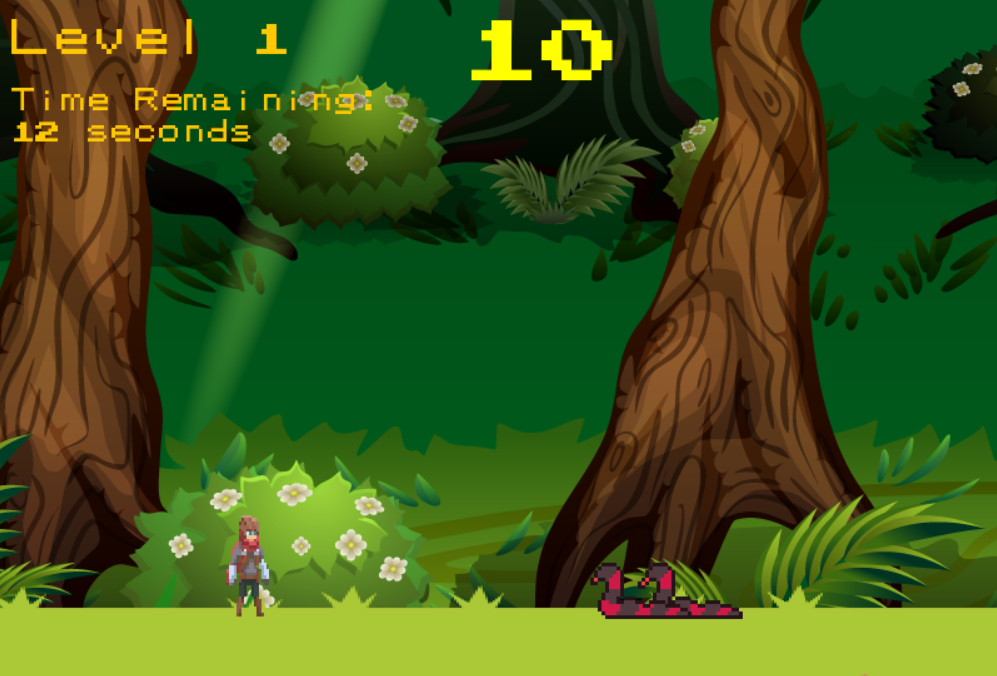
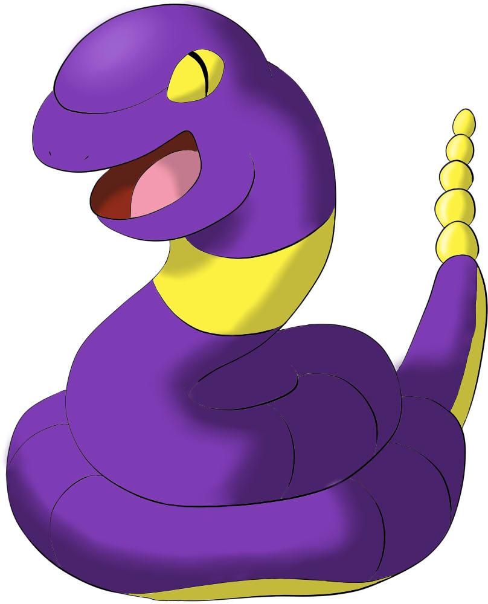

UNREAL ENGINE 5 · C++
Chase
Hunt, craft, and survive in a jungle after a plane crash. Track wild pigs, make tools, and keep pushing toward Level 100.
PLAY THE DEMO ↗PROJECT ARCHIVE / GAME DEVELOPMENT
Playable experiments, original worlds, and technical experiments and original worlds.
UNREAL ENGINE 5 · C++
Hunt, craft, and survive in a jungle after a plane crash. Track wild pigs, make tools, and keep pushing toward Level 100.
PLAY THE DEMO ↗
GODOT · SCIENCE SIMULATION
A cozy first chapter about gathering seeds, crafting simple tools, and testing how plants grow with Charles Darwin.
PLAY IN BROWSER ↗
HTML · CSS · JAVASCRIPT
A local multiplayer browser fighting game. Choose from three fighters and challenge a friend.
PLAY THE GAME ↗
PYTHON · PYGAME
Make it through platforming levels, collect diamonds, and avoid the soldiers on the way to each signpost.
VIEW SOURCE ↗
PYTHON · LEVEL DESIGN
Create, save, and load custom maps for Diamond Adventure and other tile based games.
VIEW SOURCE ↗
PYTHON · PYGAME
Take on waves of snakes and try to survive until the timer runs out.
VIEW SOURCE ↗
C# · AI EXPERIMENT
A deceptively simple console game with a mode that lets the AI play against itself.
DOWNLOAD SOURCE ↗
HTML CANVAS · JAVASCRIPT
A browser version of the arcade classic, built with HTML canvas and JavaScript.
PLAY THE GAME ↗